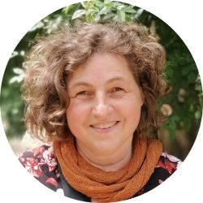

Andrea Vilaplana
Yogalehrerin BDY/EYU
Meditation
Yogatherapie
Yogaunterricht in Gruppen
Progressive Muskelentspannung

Über mich

Mein Name ist Andrea Vilaplana, ich lebe in Hildesheim, bin verheiratet und habe zwei Kinder. Yoga ist für mich eine Lebenserfahrung, ja ein Lebensprozess, der mich schon lange Zeit inspiriert und begleitet. Bereits im Alter von 16 Jahren habe ich erste Erfahrungen gesammelt und unterschiedliche Yogarichtungen kennengelernt. Auf meinem Weg durch Ausbildung, Studium, Beruf und unterschiedliche Projekte waren und sind Yoga, Meditation und Achtsamkeit meine ständigen Begleiter.
Meine 4-jährige Ausbildung nach den Richtlinien des Berufsverbandes der Yogalehrenden in Deutschland e.V. (BDY) und der Europäischen Yoga Union (EYU) haben meinen eigenen Erfahrungen das fachliche Fundament gegeben, mein Yogawissen und meine Yogaerfahrung anderen zu vermitteln und zur Yoga- und Meditationspraxis anzuleiten. Mein Unterricht nach den Prinzipien des Viniyoga basiert auf der Grundannahme, dass alle Menschen Yoga üben können! Yoga ist für mich mehr als exklusive Spiritualität, ein Fitnesstrend oder einer bestimmten Ästhetik vorbehalten: Der Yogaunterricht geht individuell auf die jeweiligen Teilnehmenden und deren Übungsstand und Bedürfnisse ein und bietet Raum, die eigenen Wirkweisen von Yoga und Meditation zu entdecken. Auf diese Art und Weise entstehen Freiräume, Yoga so kennen zu lernen und zu üben, wie es für die eigene Lebenssituation hilfreich ist: entspannend, kreativ, ausgleichend oder auch fordernd. Alles darf dabei sein, so wie es ist. Durch Yogaüben kann ich Erfahrungen sammeln und Vertrauen entwickeln, dass alles in uns vorhanden ist, um ein erfülltes und glückliches Leben zu führen - Yoga wirkt!
Qualifikationen
- staatlich anerkannte Erzieherin
- staatlich anerkannte Dipl. Sozialarbeiterin/Sozialpädagogin
- Fachlehrerin für Berufsbildende Schulen
- Beraterin für Klientenzentrierte Gesprächsführung bei der Gesellschaft für Wissenschaftliche Gesprächspsychotherapie (GWG)
- Lizenz zur Durchführung von Triple-P-Elterngruppentrainings
- Zertifizierung Kinesiologie „Touch for Health I-IV“ nach den International Kinesiologie College (IKC)
- Jahrestraining „Achtsam leben“ auf Grundlage der buddhistischen Lehren in der Tradition von Thich Nhat Hanh
- Ausbildung zur Yogalehrerin im Berufsverband der Yogalehrenden in Deutschland e.V. (BDY/EYU)
- Weiterbildung zur Meditationslehrerin bei Institut für angewandten Yoga (IAYA) „Samyama Verstehen: Der Meditationsweg des Yoga“
- Fortbildung Yoga & Faszientraining nach Liebscher & Bracht
- Kursleiterausbildung Progressive Muskelrelaxation nach Jacobson
- Regelmäßigen Teilnahme an Fortbildungen und Supervision
Angebote
Hier finden Sie eine Übersicht meiner aktuellen Angebote
"Meditation ist eine Art zu sein, keine Technik.
Bei der Meditation geht es nicht um den Versuch, irgendwo hinzugelangen. Es geht darum, dass wir uns selbst erlauben, genau dort zu sein, wo wir sind, und genau so zu sein, wie wir sind, und desgleichen der Welt zu erlauben, genau so zu sein, wie sie in diesem Augenblick ist."
Jon Kabat-Zinn
“Der Weg des Yoga ist einzigartig.
Yoga ist einzig und alleine eine Erfahrung,
und die muss man erleben, um sie zu kennen.”
Patanjali
Kurse
Meine Kurse sind zertifiziert und werden in der Regel von der Krankenkasse und der Beihilfe bezuschusst. Eine Bescheinigung wird am Ende des Kurses ausgestellt. Einstieg in die Kurse ist nach vorheriger Absprache fortlaufend möglich. Anmeldung und Anfrage hier
Die Onlinekurse können als Präventionskurs durchgeführt werden.
| Wochentag | Zeit | Kurs | Adresse |
|---|---|---|---|
| Montag | 18.30-19.45 Uhr | Online Yoga* | von zu Hause aus |
| Dienstag | 19.45-21.00 Uhr | Raum für Yoga | Goslarsche Str. 19, 31134 Hildesheim |
| Mittwoch | 9.30-10.45 Uhr | Raum für Yoga | Goslarsche Str. 19, 31134 Hildesheim |
| 18.30-19.30 Uhr | Online Yoga | von zu Hause aus | |
| Donnerstag | 12.00-12.45 Uhr | Yoga in der Mittagszeit Stadt/LK Hildesheim** | |
| 17.30-18.45 Uhr | Raum für Yoga | Goslarsche Str. 19, 31134 Hildesheim | |
| 19.30-20.45 Uhr | Praxis für Physiotherapie/Naturheilkunde | Detfurther Straße 1a, 31162 Bad Salzdetfurth / OT Wesseln |
* In kleinen Gruppen (8-10 Teilnehmer)
** geschlossener Teilnehmerkreis
Viniyoga
"Viniyoga* – kein Stil, sondern die Kunst, Yogaüben individuell angepasst, transparent, kompetent und kreativ anzuleiten. Frei von Akrobatik, religiösen Bezügen und Pseudowissenschaft..
* Yogapraxis ›muss angemessen und schrittweise‹ gelehrt werden: tasya bhūmiṣu viniyogaḥ"
– Yoga Sūtra III.6
- ...in der Sie das Richtige und Notwendige auf gesunde Weise üben?
- ...in der Sie Ihre Übungszeiten und Übungsintensität selbst bestimmen?
- ... die sich – weil auf Sie zugeschnittene – durch hohe Wirksamkeit auszeichnet?
- ... die Sie bei einem gesundheitlichen Problem unterstützt?
- ... die Ihnen dabei hilft, wieder Freude am Leben zu finden oder Ängste zu reduzieren?
Für das regelmäßige Üben zu Hause.
- ...gesundes und wirksames Üben
- ...variantenreiche Anpassung der Übungen
- ...intelligenter Kursaufbau
- ...Betonung der Verbindung von Körper, Atem und Aufmerksamkeit